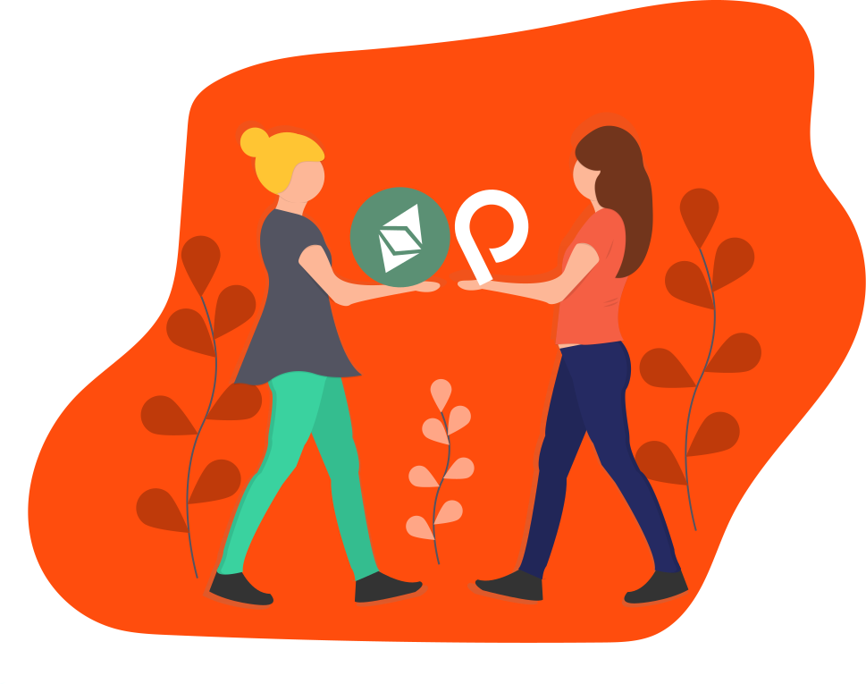

Bu ekibin topluluğa daha çok katkı sağlaması, sunucu ve diğer masraflarını ödemesine yardımcı olmak veya üyelere bir kahve ısmarlamak için (yorucu bir günün ardından çok iyi geliyor) Patreon'dan veya Etherium aracılığıyla bağış yapabilirsiniz.
MerOS; kullanıcı dostu, güzel görünümlü, çok amaçlı, Nix tabanlı bir GNU/Linux dağıtımıdır. Bilgisayarlarının çoğuna hakim olmak ve farklı bir Linux deneyimi yaşamak isteyen, tasarım anlayışı geniş kişiler için ideal bir dağıtımdır.
MerOS; tatlı masaüstü ortamı, kişiselleştirilmiş uygulama mağazası, gömülü yazılımları, ilerici web uygulamaları ve aktif topluluğuyla kolaylık vaat eder. Çoğu olmazsa olmaz modern GNU yazılımlarının yanında Mercode topluluğunun yaptığı yazılımlar da içinde gelmektedir. Büyükanneniz bile MerOS'i kolaylıkla kullanabilir.
MerOS güvenli çünkü bütün işlemler izin gerektirir ve uzaktan bağlantılar SSl ile sağlanır. Ayrıca bütün derlenmiş paketler topluluk onayıyla halka açılır.
Düşük sistem gereksinimleri ile MerOS; modern iş istasyonlarına, tek kartlı bilgisayarlara ve eski donanımlar için idealdir. Eski Raspberry Pi 2'niz bile MerOS ile hayat bulabilir. MerOS yeni bilgisayarları hızlı, eskileri ise kullanılabilir kılar.
Bütün GNU/Linux dağıtımlarının ortak yanı özgür yazılım olmalarıdır. Özgür yazılımlar herkesin kullanması, araştırması, paylaşıp geliştirmesi için özgürdür. Kısaca MerOS kelimenin tam anlamıyla özgürdür.
Meros, Mercode'un harika topluluğu olmadan var olmazdı. Mercode; yazılımcıları, hackerları, aktivistleri, makerları ve tasarımcıları tek çatı altında toplayan, internetin merkezsizleşmesi ve kullanıcıların özgürleşmesi üzerine açık kaynaklı özgür yazılım projeleri üreten ve varolan projeleri geliştirip destekleyen bir FLOSS topluluğudur. Mercode'da, takım ile topluluk arasında büyük bir ayrım yoktur. Herkes, geçmişine veya yaşına bakılmaksızın Mercode'a çeşitli platformlardan destek olabilir ve ekibimize katılabilir.
MerOS, Linux ve diğer Unix sistemleri için güçlü bir paket yöneticisi olan Nix'i temel alır ve bu da paket yönetimini güvenilir ve tekrarlanabilir kılar. Atomik yükseltmeler ve rollbackler, bir paketin birden fazla sürümünün yan yana kurulumu, çok kullanıcılı paket yönetimi ve build ortamlarının kolay kurulumunu sağlar.